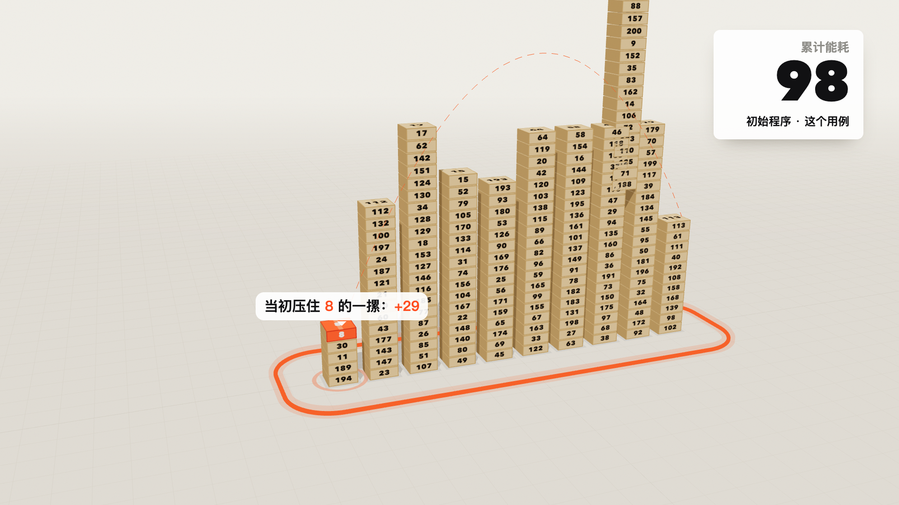
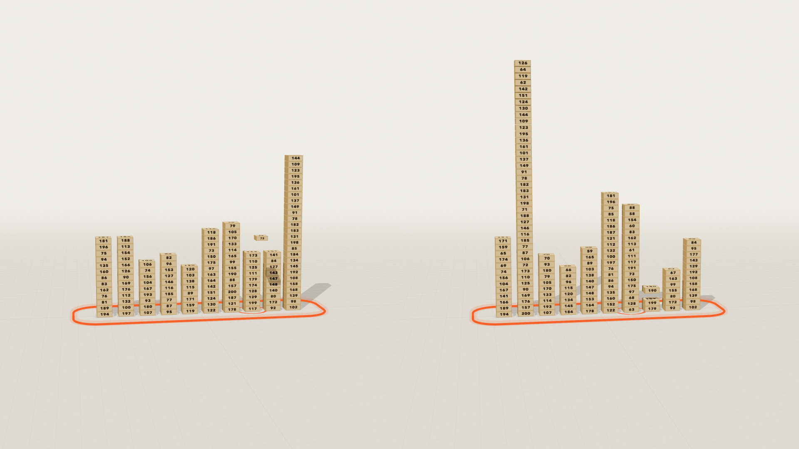

在预算里做研究，
每一步都有据可查
分工
小模型干主力
关键节点请大模型
关键节点请大模型
验证
模型提出想法
裁判决定结果
裁判决定结果
进化
验证过的程序
沉淀为可回退的快照
沉淀为可回退的快照

扫码查看代码与报告
github.com/bohack-2026-hw/QuotaCrux · docs/video/QuotaCrux-showcase.mp4
| 环节 | 模型做什么 | 程序做什么 |
|---|---|---|
| 规划 | 用“分析”写下计划 | 研究问题、基线、允许修改范围、工具、预算在运行前固定 |
| 取证 | 决定是否需要证据 | 沙箱内对候选做 cProfile；返回状态、指标、失败类别与公开反例 |
| 假设 | 每个候选写目的、假设、预期与验证方法 | 静态检查动作参数与允许范围；假设一律标为“未验证” |
| 实验 | 生成候选代码 | 隔离容器中由固定评测器检查正确性、规则用例，并交替计时 |
| 修正 | 读取判定与反例，提出下一版 | 判定支持 / 部分支持 / 反驳 / 未能检验；按规则升级模型 |
| 分流 | — | 按经验覆盖决定从小模型还是大模型开始 |
| 交付 | — | 冻结最佳候选，隐藏数据上独立测试一次；导出记录、程序与复核脚本 |
| 判定 | 条件 |
|---|---|
| 支持 | 正确、有改善且达标 |
| 部分支持 | 正确、有改善但未达标 |
| 反驳 | 正确但没有改善 |
| 未能检验 | 候选出错，无法检验假设 |
| 先用 Qwen | 直接 GPT | |
|---|---|---|
| 达标 | 12/12 | 12/12 |
| 加速比中位数 | 2.11× | 2.18× |
| 循环时长中位数 | 49 s | 33 s |
| 费用 | $0.047 | $0.188 |
| 失败候选 / 升级 | 2 / 2 | 0 / 0 |
| 样例 | 记录值 | 复核 |
|---|---|---|
| v1 · A-01 | 1.4367× | 1.44× |
| v2 · D-01 | 1.4481× | 1.4473× |
| v3 · S-01 新任务族 | 6.35× | 6.69× |


| 策略 | 请求 小/大/决策 |
|---|---|
| 固定小模型 | 14/0/0 · 15/0/0 |
| 固定大模型 | 0/7/0 · 0/6/0 |
| 规则自适应 | 3/6/0 · 3/5/0 |
| Decisions 动作路由 | 2/4/6 · 2/6/8 |
| 基准 / 任务族 | 适配器 | 当前范围 | 裁判机制 |
|---|---|---|---|
| 自建任务族 | families/*.py | 分组聚合 · 访问日志 · 区间合并；43 个冻结任务包 | Docker 沙箱 · 7 个规则用例 · 5 轮交替计时 |
| ALE-Bench | benchmarks/ale.py | AtCoder 启发式 ahc024、ahc026 | 独立容器运行上游 Rust vis 裁判 |
| AlgoTune | benchmarks/algotune.py | convolve_1d、pagerank | 上游 is_solution 校验 + 配对交替计时 |
| EffiBench-X | benchmarks/effibench.py | 623 道 Python 题（io 与 functional） | 独立容器校验，沿用上游输出归一化 |
| KernelBench | benchmarks/kernelbench.py | Level 1 方阵乘法（PyTorch / CUDA C++） | 远端 GPU Docker worker · CUDA events |
| 固定小模型 | 固定大模型 | 小模型 + 文字经验 | QuotaCrux | |
|---|---|---|---|---|
| 质量 | 0% 提升 | +5.50% ~ +5.73% | 加速比 1.41× → 1.29× | +5.82% ~ +6.37% · D 留出 1.20× → 1.73× |
| 大模型调用 | 0 | 每轮 6–7 次 | 升级 11 → 5 次 | S 流 27 → 6 · D 留出 7 → 0 |
| 正确性由谁判 | 同一外部裁判（对照中保持一致） | 外部裁判 · 模型不自评 | ||
| 经验能否直接用 | — | — | 需要重新写一遍 | 已验证程序先复验，18/18 零调用交付 |
| 新问题 | 原地打转 | 每次都付费 | 没有相近经验 | 分流器直接交给大模型，之后复用 |
| 回退与审计 | — | 不可变快照 · 全量账本 · 复现包 | ||